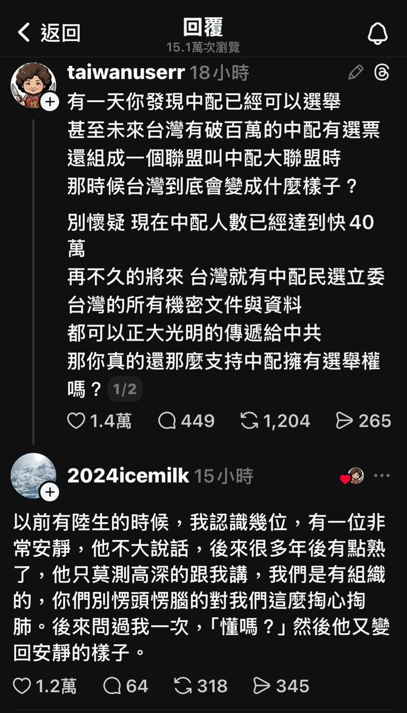

The Raven in the Rain🏳️🌈
@Raincandy_1937
RT @mg49k6591t: 以前我曾認識一個中生，算反共派
那時我很好奇他不太跟其他中生交流的原因
他告訴我，來台中生群體是有「黨組織」的且數人間就一個細胞做監視與報告
很多台灣人至今還認為中配議題只是單純的「歧視」
但事實上這早就是「嚴重國安問題」，台灣人若不擋下…

祖國臺灣的異鄉人
@mg49k6591t
以前我曾認識一個中生，算反共派
那時我很好奇他不太跟其他中生交流的原因
他告訴我，來台中生群體是有「黨組織」的且數人間就一個細胞做監視與報告
很多台灣人至今還認為中配議題只是單純的「歧視」
但事實上這早就是「嚴重國安問題」，台灣人若不擋下中配參政權
未來你我的代議士都將是中共的人 https://t.co/qTqeUErRA5